12.06 Prototype 3
Prototype 3 is the last stage of our testing process. What we present here should reflect the look and feel of the project, as well as being completely functional. There
were a few improvements I wanted to have underway before this iteration.
- Improve code of barcode scanner module
- Update receipts to new barcodes to work with the new module
- Finalize a set of items to photograph and feature in a video
- Create a final video that features three objects
- Set up project as close as possible to the idea of multiple screens
Photo Day
This was the heavy lift I'd been dreading all semester. The weekend before Prototype 3 was the weekend I'd have to collect all the featured items and document them. This meant
finding these objects, photographing them, breaking them, printing and framing the photographs, arranging broken objects and framed photograph, and photographing them again.
There were a few tough issues with this process. First, it takes a lot of time to go back and forth to print photos at home and bring it back to site. Second, there's no guarantee
the objects will still be there when I get back. Someone either could've taken it, or it would've been cleaned up and tossed away. All the while, being mindful of daylight, or the
lack of it. These constraints all pointed towards a single solution - requesting some additional help.
After mapping out possible workflows, I decided, along with my helpers, on a consolidated approach to collecting and documenting these objects. We'd go around to find objects,
photograph them, and we'd take them with us in a box for safekeeping. At the end of a haul, we'd head back to my apartment, edit and print out all the photos, and take them with us
as we find locations to destroy these objects.
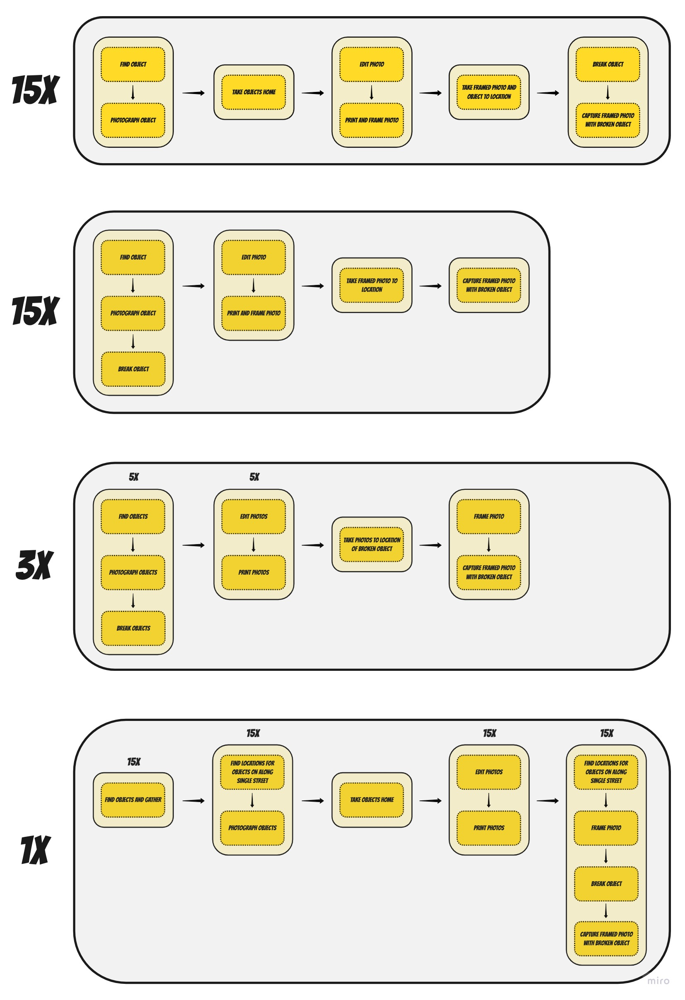
The backdrops for the objects were chosen both compositionally and as compliments to the printouts. When breaking the objects, care was taken to break in a manner that still maintained a legibility of what the object used to be. It should be apparent and immediately obvious that the broken object corresponds to the object in the photograph. Upon breaking, the composition and orientation of the pieces are arranged in a manner that suggests a loss of dignity. Pieces in this manner won't be found upright, and must always portray a fragile existence.


Below are some photographs that came out of the photoshoot.
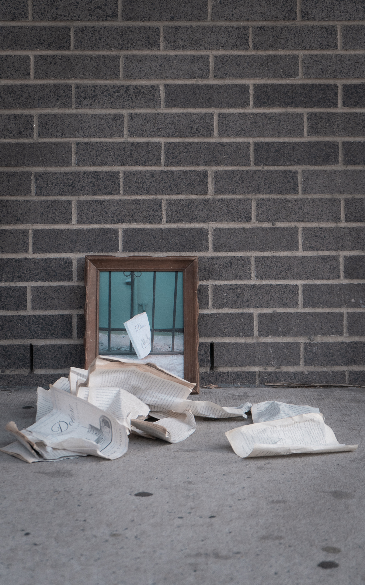 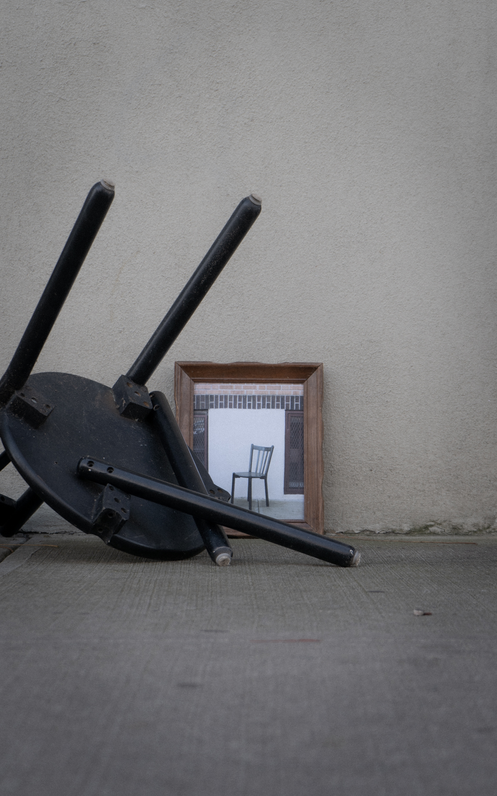 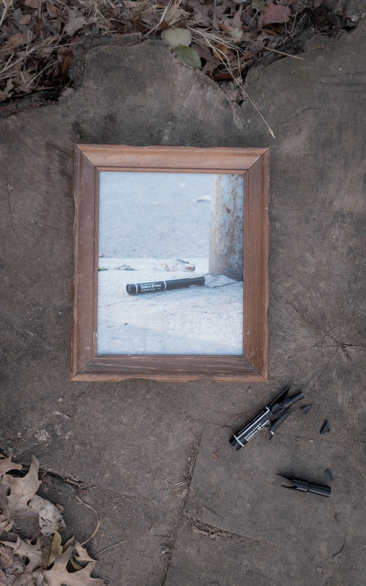 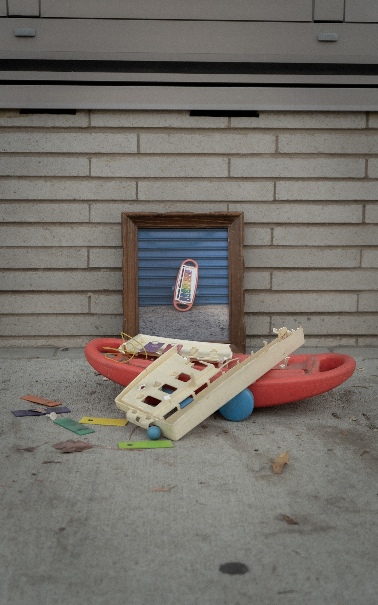
Refining the Code
Some of the feedback from the previous testing session noted how there was an act of surprise upon scanning the code. When confronted with a black screen, there was no expectation of what might come up when the barcode was scanned. The way the code was previously written, the scanned image would remain on the screen. This posed an issue to the next group of viewers, as they would have already understood the correlation without interacting directly. by coding in a timer that resets the screen to black after 10 seconds, a sense of unexpectedness is regained. Ideally, the picture would slowly dissolve to a blank screen, echoing how a memory might fade in our minds, but that refinement can come later.
Testing
Testing was set up within the main D12 space. The plan was to have two monitors, but the eventual solution was to make use of the TV out in the main space. I moved a table in front of the TV, set up the receipts, and let the video roll.
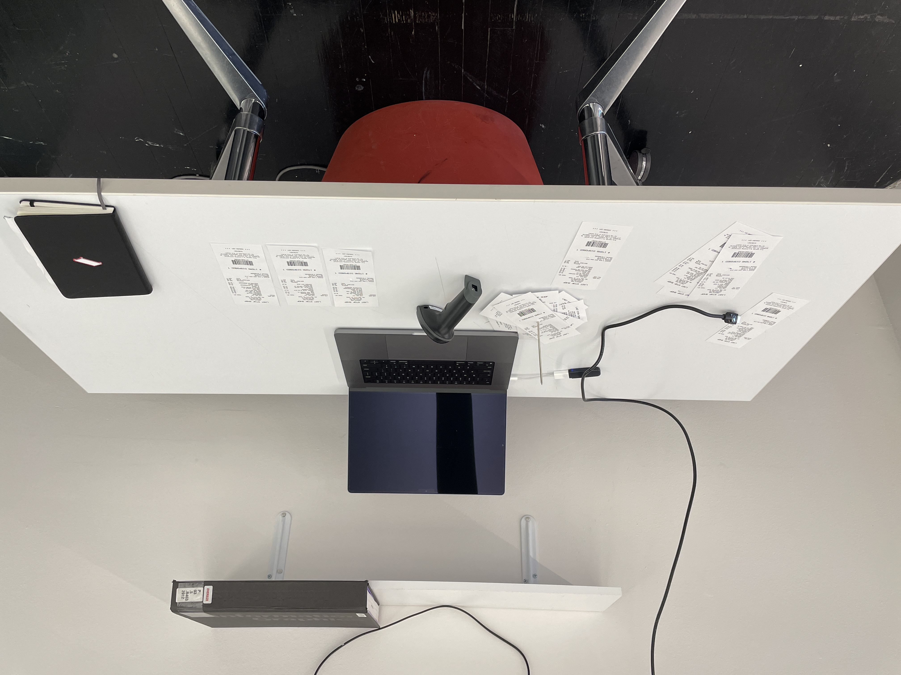 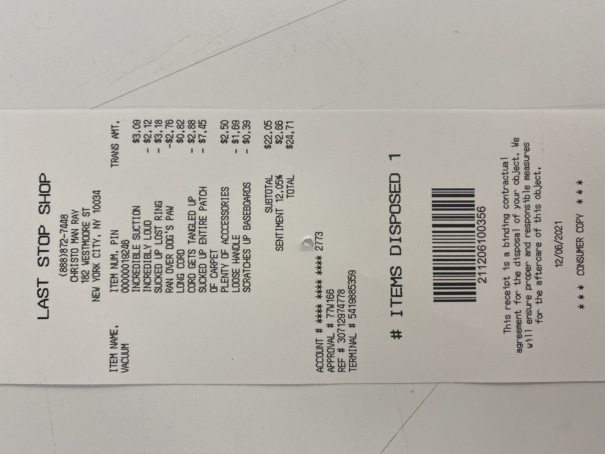 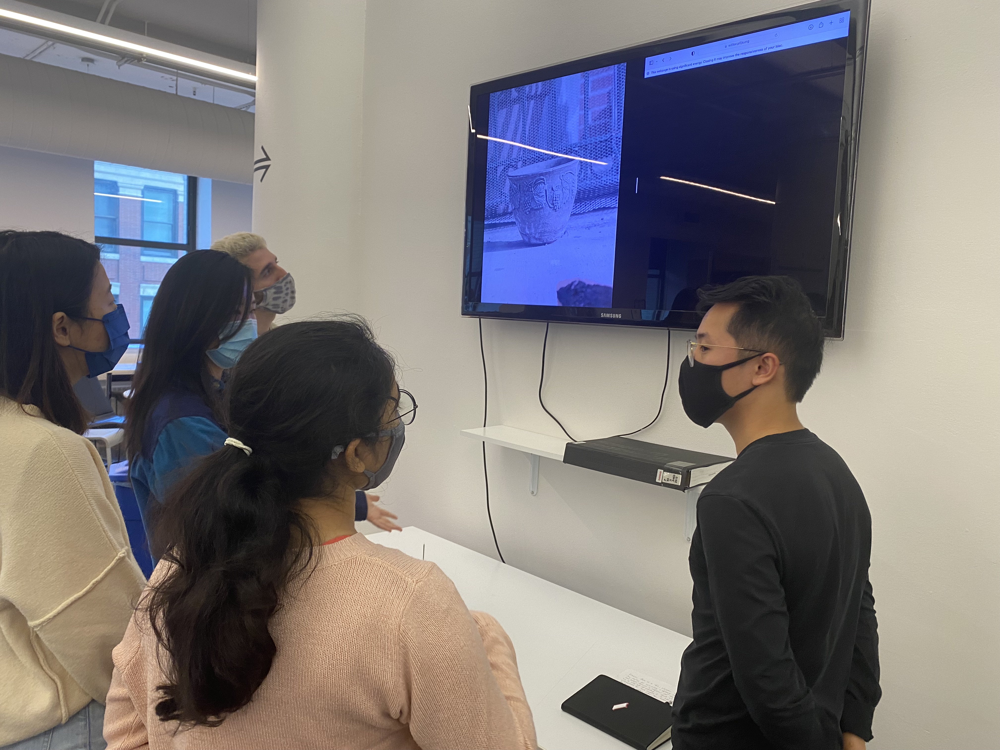
Feedback
Similar to the previous prototype, the qualatative question I asked was about the viewer's emotional experience when interacting with the piece. The majority of the users responded with answers in line with what the previous testing uncovered and was also in line with anticipated outcomes for the project. Some of the desriptions included -
- Languid
- Mournful
- Memory - the days that are no more
- Nostalgic
- Waste
- Sad
- Planned Obselesence
In this prototype, the receipts were stacked on the receipt stake. This was something I've been going back and forth on, questioning if it's too forward for the project. The intent is to show loss through destruction, not necessarily destruction for destruction's sake. Because the subject matter is so soft, by introducing a sort of violence would only detract from the message. However, during one test, someone did wonder, when all the receipts were stacked on the stake, if the order of the receipts had any signifiance. This was the first time this has been brought up, but it's a really interesting question. I can imagine a narrative building from the order of the receipts, but that would be for another project. There is an aspect that ties the receipt together, however. Through the account number on the receipt hints at an owner. There are a few items attributed to the same account number, suggeting this person threw out multiple items over time. One could potentially paint a picture of the owner by looking deeply into these receipts.
Some feedback was directed at the look and feel of the receipts. A few of the testers thought it would be a nice addition if the receipts weren't presented as pristine relics, but rather collected waste. They should show more wear and tear.
Lastly, there was feedback around the name of the "shop" on the receipt. Perhaps there could be a better name than 'Last Stop Shop.'
Final Improvements
The weekend before final presentations, I set up shop in one of the rooms to document the project. This setup is the closest so far to the anticipated idea, and involves two monitors, a lamp, a table, receipts, and a receipt scanner. The following images and videos feature the latest setup, and also tests the mood of the room to see if it's appropriate (I believe it is!) Side note, this room is wonderful because it's carpeted and has no exterior windows. Walls are clean, and makes for a great space to document. Please bring multiple extension cords, though.
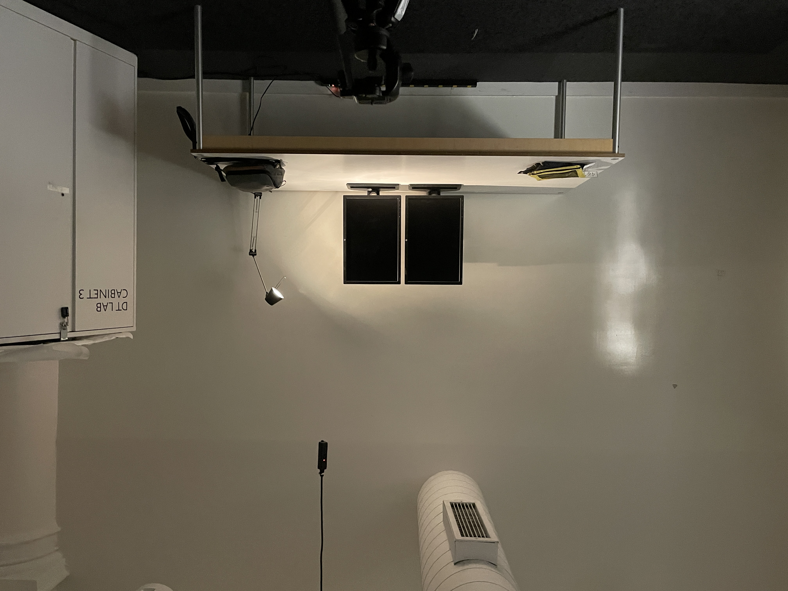 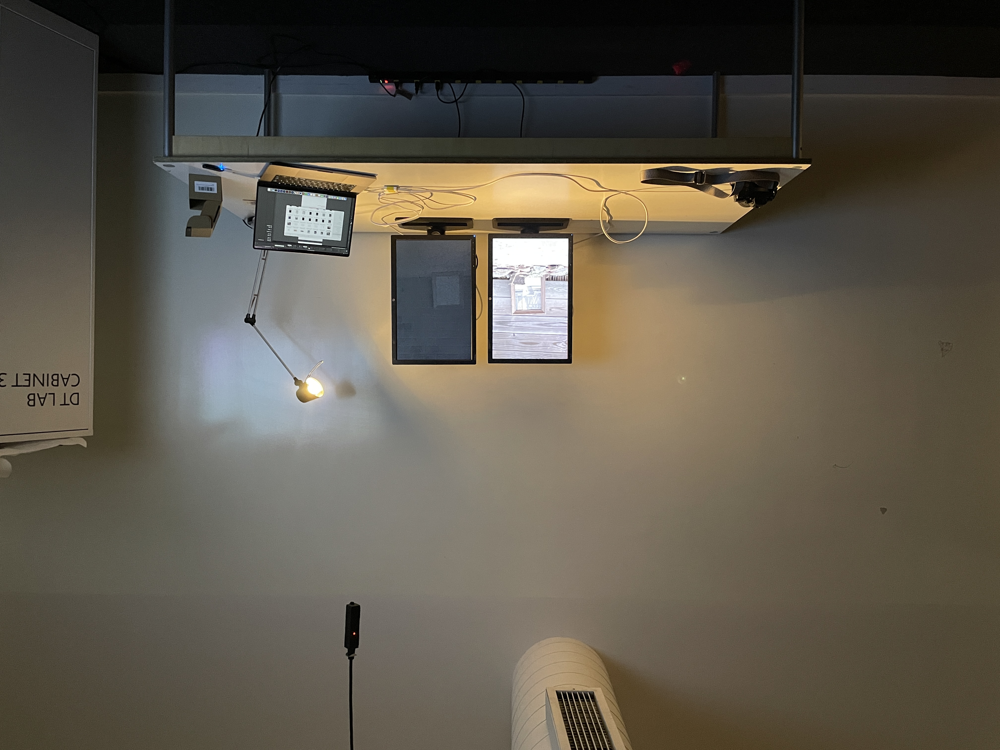
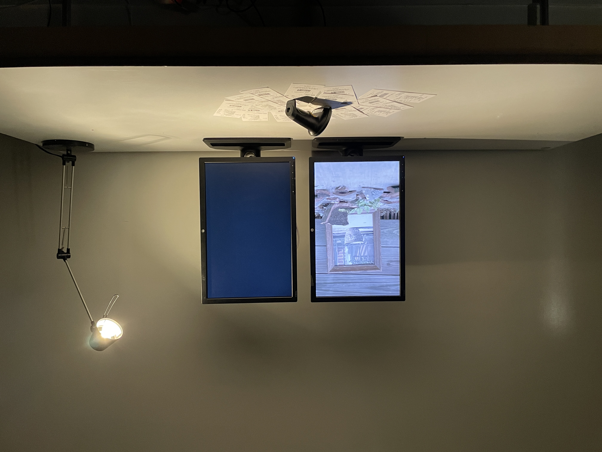 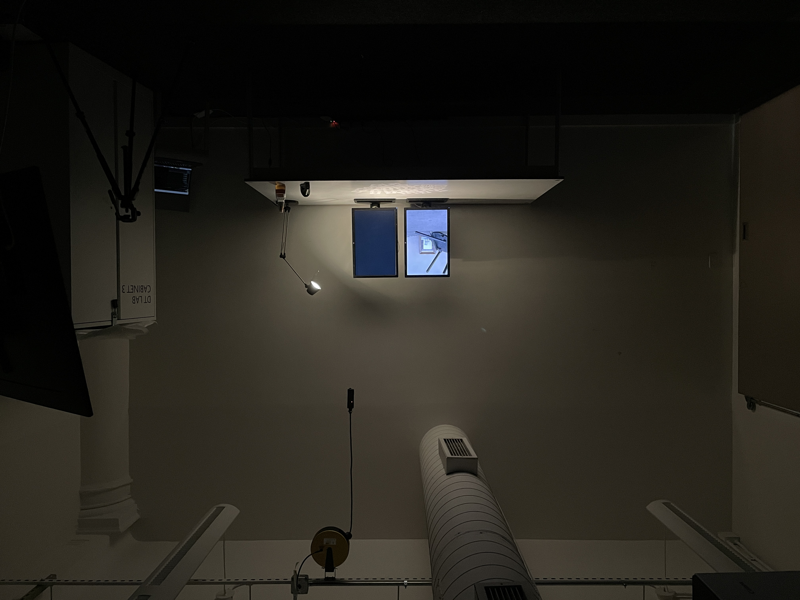
Credits
Thank you for all those who helped. Molly Chen, Hiroki Nakagawa, Cecil Green, Karolina Luckiewicz, Yash Goval, Olivier Bruckner